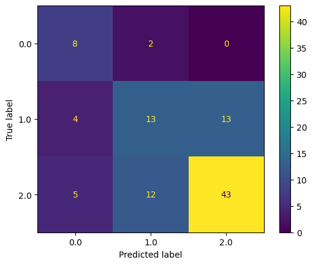

import pandas as pd
df = pd.DataFrame(
dict(x=[4, 5, 5, 6, 7, 7], y=[1, 1, 2, 7, 6, 7], c=[1, 1, 1, 2, 2, 2]),
index=[*range(1, 7)],
)
df| x | y | c | |
|---|---|---|---|
| 1 | 4 | 1 | 1 |
| 2 | 5 | 1 | 1 |
| 3 | 5 | 2 | 1 |
| 4 | 6 | 7 | 2 |
| 5 | 7 | 6 | 2 |
| 6 | 7 | 7 | 2 |
import pandas as pd
df = pd.DataFrame(
dict(x=[4, 5, 5, 6, 7, 7], y=[1, 1, 2, 7, 6, 7], c=[1, 1, 1, 2, 2, 2]),
index=[*range(1, 7)],
)
df| x | y | c | |
|---|---|---|---|
| 1 | 4 | 1 | 1 |
| 2 | 5 | 1 | 1 |
| 3 | 5 | 2 | 1 |
| 4 | 6 | 7 | 2 |
| 5 | 7 | 6 | 2 |
| 6 | 7 | 7 | 2 |
from scipy.spatial import distance_matrix
import numpy as np
point = np.array([[8, 4]])
## Distancias del Punto al resto de los puntos
pd.DataFrame(
distance_matrix(point, df[["x", "y"]]), columns=[*range(1, 7)]
)| 1 | 2 | 3 | 4 | 5 | 6 | |
|---|---|---|---|---|---|---|
| 0 | 5.0 | 4.242641 | 3.605551 | 3.605551 | 2.236068 | 3.162278 |
Si k es 1, la distancia mas corta es 5, luego la predicción es 2.
Si k = 3, las distancias son 5,6 y empate entre 3 y 4. Dado que 5 y 6 son 2, ya es mayoria por lo que el empate no importa, la predicción es 2.
from scipy.spatial.distance import cdist
pd.DataFrame(
cdist(point, df[["x", "y"]], "mahalanobis"), columns=[*range(1, 7)]
)| 1 | 2 | 3 | 4 | 5 | 6 | |
|---|---|---|---|---|---|---|
| 0 | 3.07265 | 2.182821 | 2.357716 | 3.24037 | 1.855041 | 2.338929 |
Para k = 1 la distancia más pequeña es 5, luego la predicción es 2.
Para k = 3, las 3 distancias más cortas son 5,2 y 6, luego la predicción también es 2.
conf_mat = np.array([[8, 2, 0], [4, 13, 13], [5, 12, 43]])
## Función para tomar una matriz de confusión y recrear las predicciones
def create_vectors(conf_mat):
rows, cols = conf_mat.shape
original_vals = np.empty((0, 2))
for i in range(rows):
for j in range(cols):
interim = np.repeat([[i, j]], conf_mat[i, j], axis=0)
original_vals = np.append(original_vals, interim, axis=0)
y = original_vals[:, 0]
y_pred = original_vals[:, 1]
return y, y_pred
y, y_pred = create_vectors(conf_mat)from sklearn.metrics import classification_report, ConfusionMatrixDisplay
## Las predicciones recreadas generan esta matriz de confusión
# OJO: ELIMINÉ un 1 para que hayan 100 valores, si no es lo que se busca,
# se puede agregar el 1 en el objeto conf_mat de más arriba.
ConfusionMatrixDisplay.from_predictions(y, y_pred)
## Esdto entrega el Accuracy único como mandé en un notebook y Precision, Recall y F1 por clases 0,1 y 2.
print(classification_report(y, y_pred, digits=3)) precision recall f1-score support
0.0 0.471 0.800 0.593 10
1.0 0.481 0.433 0.456 30
2.0 0.768 0.717 0.741 60
accuracy 0.640 100
macro avg 0.573 0.650 0.597 100
weighted avg 0.652 0.640 0.641 100

from sklearn.tree import DecisionTreeClassifier, plot_tree
import matplotlib.pyplot as plt
df = pd.DataFrame(
dict(
A1=[1, 1, 0, 1, 1],
A2=[0, 0, 1, 1, 1],
A3=[0, 1, 0, 1, 0],
y=[0, 0, 0, 1, 1],
)
)
display(df)
X = df.drop(columns="y")
y = df.y
dt = DecisionTreeClassifier()
dt.fit(X, y)
plot_tree(dt, filled=True, feature_names=X.columns)
plt.tight_layout()| A1 | A2 | A3 | y | |
|---|---|---|---|---|
| 0 | 1 | 0 | 0 | 0 |
| 1 | 1 | 0 | 1 | 0 |
| 2 | 0 | 1 | 0 | 0 |
| 3 | 1 | 1 | 1 | 1 |
| 4 | 1 | 1 | 0 | 1 |
Dado que no se pide una predicción en particular, entrenar un Naive Bayes implica calcular todas las probabilidades apriori y condicionales requeridas por el modelo.
y A1
0 1 0.666667
0 0.333333
1 1 1.000000
Name: proportion, dtype: float64y A2
0 0 0.666667
1 0.333333
1 1 1.000000
Name: proportion, dtype: float64## Para la variable numerica A3, se requiere solo la media y desviacion estandar. El valor de likelihood dependerá del valor solicitado que tiene que ir dentro de la distribución normal...
df.A3.agg(["mean", "std"])mean 0.400000
std 0.547723
Name: A3, dtype: float64Ejemplo:
Calcular Una predicción con A1 = 1, A2=0 y A3 = 1.
Probabilidad que y sea 1: \[P(y=1)*P(A1=1|y=1)*P(A2=0|y=1)*P(A3=1|y=1)\]